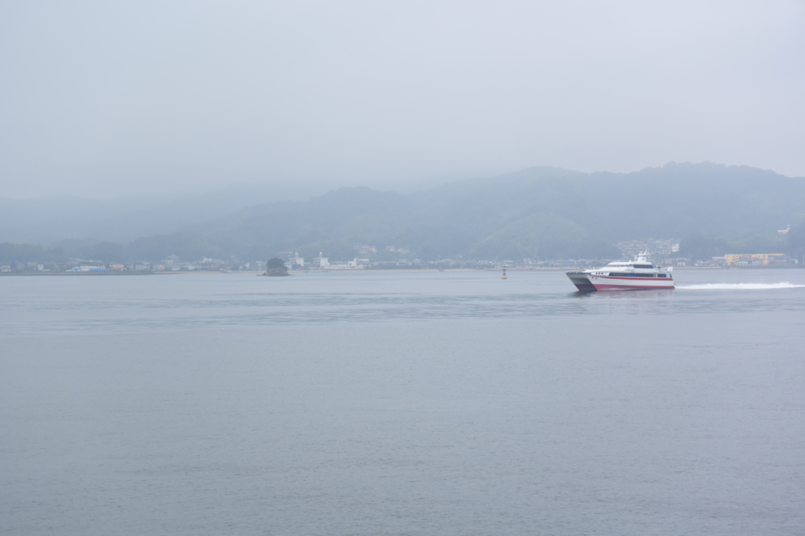
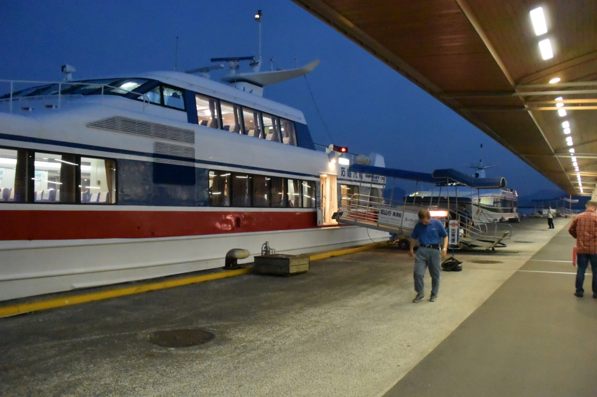

船乗って松山から広島・呉に行ってきたった。
公開日：

お盆は船に乗って広島・呉に行ってきた。
前回は三津港から柳井行き（降りたのは途中の周防大島にある伊保田）に乗ったけれど、今回は松山観光港からの乗船になる。ここからは、広島行きのほかにも小倉行きが出ている（これも今度乗りたいものだ）。

先に文句を言っとくけど、この松山観光港というのがめちゃくちゃアクセス悪い。伊予鉄高浜駅から、さらに連絡バスに乗らなくてはならない（運賃180円）。

行きはそれほど苦にも思わなかったが、帰りは30分ほどバスを待たされ、高浜駅でも電車の発車までに15分ほど待つ羽目になって、かなり堪えた。松山市駅行きのリムジンバスが出ているので、市内中心部に用がある人はそっちを利用するのがいいようだ。個人的には三津港か衣山、古町あたりで止まってくれると助かるのだが、生憎、そんな配慮はない。
地元民はマイカーでのお迎えが一般的のようで、バスト列車を利用する人は少なかった。みんながマイカーを利用するから公共交通機関がダメなのか、公共交通機関がダメだからみんなマイカーでお出迎えするのか。とりあえず“おもてなし No.1”を詐称する暇があったら、伊予鉄の延伸とかマジで考えた方がいいと思う。
松山 → 呉
行きしなは呉で降りて、1日観光した。その話はまた今度、今日は船に乗った話だけ。

松山 ⇔ 広島・呉 間には、足の速い“スーパージェット”と、クルマも乗れる“クルーズフェリー”の2種類がある。
| スーパージェット | クルーズフェリー | 備考 | |
| 広島までの所要時間 | 約1時間 | 約2時間 | 呉寄港便は＋15分程度 |
| 広島までの運賃 | 7,100円 | 3,600円 | |
| 車両乗船 | 不可 | 可 |

行きは安いフェリーの方をチョイス。フェリーは JAF 割引（1割）が効いたので、呉までは2,410円（正規運賃は 2,670円）。だいぶ安いと思った。今度バイクで呉に行こう。
呉止まる便ないマン pic.twitter.com/sGvUsWV4b5
— だるやなぎ に天使が舞い降りた！ (@daruyanagi) 2015年8月12日
ちなみにスーパージェットは呉に停まらない便が多いので、あらかじめ運行表をチェックしておいた方がいいかも（フェリーも一便目は呉に停まらないようだ）。
フリーWi-Fiあるやんって思って艦これ行ったら怒られた pic.twitter.com/t2VNqCWDBW
— だるやなぎ に天使が舞い降りた！ (@daruyanagi) 2015年8月13日
あと、船内には無料の Wi-Fi があるので、艦これだって楽しめる……はずだったが、ポリシー違反だとかなんだとかでブロックされてた／(＾o＾)＼
ただし、洋上でも Y! モバイルがつながったので、ケータイはだいたいイケるんじゃないだろうか。自分はテザリングでネットしたり、持ってきた本を読んだりしてのんびり過ごした。

船は15ノットで快調に進む。途中で、スーパージェットとすれ違った。

やがて橋が架かった狭い海峡に差し掛かり（本土と江田島の間にある“音戸の瀬戸”というところらしい）、船足が遅くなる。ここを抜けると、呉の港はすぐそこ。右舷に林立した大型クレーン、鼠色の護衛艦、艤装中のタンカーなんかがひしめいている。「呉にきた！」って感じやね！
広島 → 呉

帰りは広島観光をしたので、広島港（宇品）経由。広電に乗ったの、小さい頃以来かもしれない。
大出費や pic.twitter.com/WOjazkS1du
— だるやなぎ に天使が舞い降りた！ (@daruyanagi) 2015年8月15日
広島港に着いたのが午後7時前ということもあり、残りはスーパージェット2便、クルーズフェリー1便だけだった。どっちに乗るか散々迷ったけれど（あぁ、貧乏人の悲しいところだ！！）、結局、奮発してスーパージェットに乗ってみた。JAF 割引はないようだが、期間限定の謎割引が効いて運賃は 6,850円。

2階席はなんかいいシートっぽくて500円余計にかかる。まぁ、混んでない限りは1階席でも十分快適だった。自販機でビール飲んだり、Surface 3 広げて艦これしたりしているうちに、松山観光港に到着。フェリーよりも早くて快適、さすが倍の値段はとるだけあると思った。
――まぁ、それも連絡バスを待ったり、高浜駅で電車を待ってる時間で無駄になってしまったんだけど（＾ｖ＾）……
フェリーとタクシーで帰るのが、自分的には最適解だった。所要時間と運賃はスーパージェット＋電車・バスと変わらないけれど、そっちの方が断然楽だ。っていうか、スーパージェットとタクシー使って帰れる身分になりたい……。